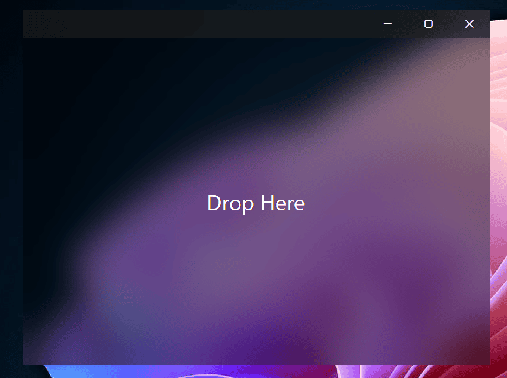
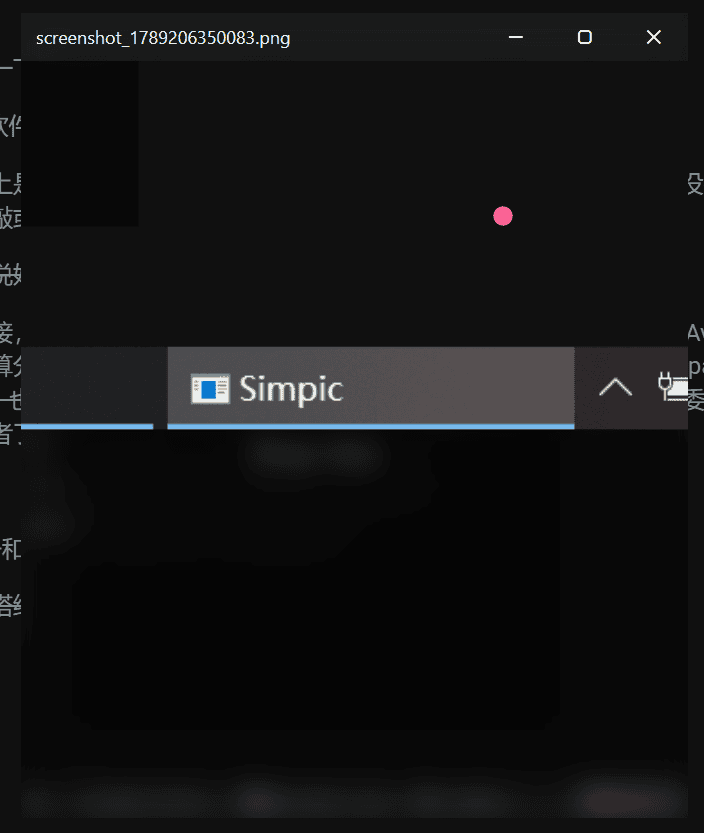
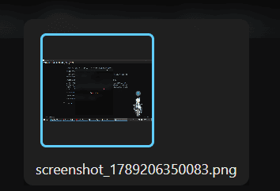
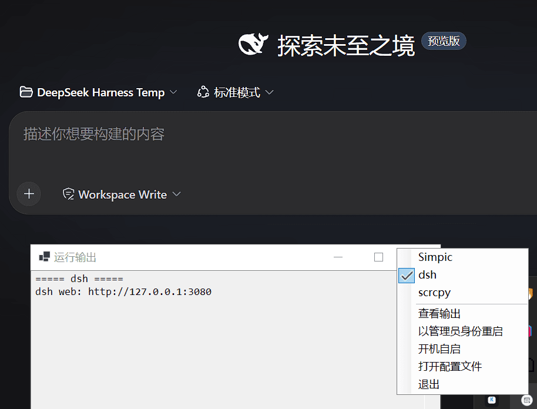
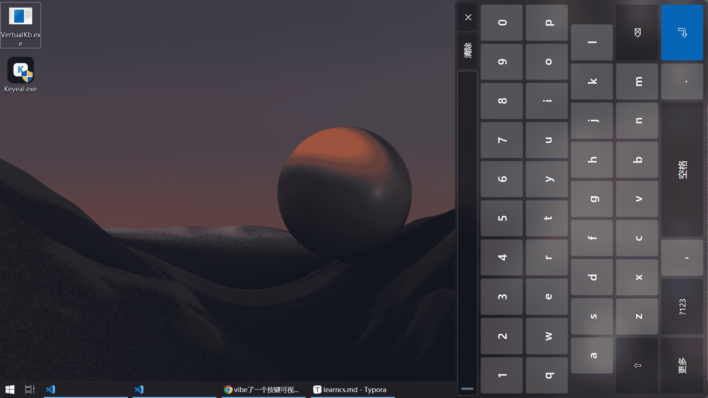
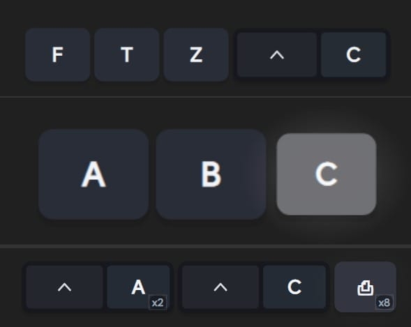
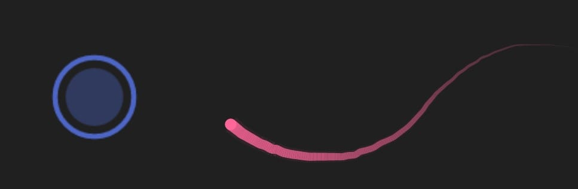

最近这段时间跑去简单尝试了一下C#，主要是因为我认为某些东西如果要用js去写，那旧必须运行个V8，性能上是个问题，如果换一种语言会好很多，于是综合考虑之下，选了C#，因为这个也是跨平台的
先看着菜鸟教程看了一会，好想学进去了，好像懂了，那就开始练手吧
然后发现大脑一片空白
于是乎便使用AI的力量，我并没有直接vibe，而是让它一步一步教我：
我是一个C#初学者，接下来你要辅助我开发一个程序，不允许帮我写而是教我怎么写，你要一行一行代码给出来，不能放上长长一段代码
然后……
好像什么也没学到！（大喜
我不知道啊，可能是AI时代下我们真的学不进去了，也可能是我真的没有学习的力气了……
说实话，我现在还不是很明白这玩意的语法，但我没什么时间去深入研究学习了……
感受
这与JS和PY还是有点区别的，比我当年py转js的跨越感大多了
首先是类型上，其实也不算是困惑吧，我要创建一个数组，我还是想着js的那个数组，也就是py和c#的列表，而且写类型的时候也是写了ts中数组的写法（如string[]），不过很快发现这不太对啊，原来你也有list的吗，原来list和array不一样的吗
还有，在py和js被惯坏了，字符串肯定是单引号打起来最方便，但是在C#，这可不是一个玩意啊
单引号是char而双引号是string，一个存单个Unicode一个存平常用的字符串
但其实最搞不懂的，是命名空间
其实我并不喜欢这套玩意，好乱
在py，引入一个模块用import，如果是项目内某个文件夹内的文件，比如foo/bar.py，就能用import foo.bar了用点分隔，在js，也是import（cjs用require），但是内容是路径字符串，例如import "./foo/bar.js"
到了c#，按我的理解，不知道对不对，这不是按文件看的，命名空间到处都是，是全局的，不能一眼看出这个命名空间是不是来自于哪个文件
命名空间可以随时使用，但一般用的时候嵌套起来挺严重的，直接长长一串贴上去，层数又多名字又长，要是想简便一点，可以用using，但即使是using，也得写得长长的
有时候简写，结果两个包都有这个命名空间，直接冲突了，而且这样搞写法也很多，这样也太乱了
好麻烦，不喜欢
或许C#的语法哲学不适合我吧……
项目
但是这段时间也是练了一下手并vibe了几个小软件的，毕竟C#实用性还是有的
这里有两个纯vibe的小软件，和两个伪手写的软件
什么是伪手写？那基本上是我照着AI给出的代码抄的，算是基本上都是AI写的，只不过AI没有调用工具操作文件而是我代劳手敲或者复制过去的
没错我就是这么颓废，说好的自己写呢怎么指导了几下几乎没有哪部分是自己写的了
至于构建产物的下载链接，我统一压缩了放在这里，采用分卷压缩，因为四个有三个都是Avalonia的而且文件体积比较大，就算分开来压缩放到这里也得分卷成两个文件（我要考虑到部署在cf pages上有单文件最高25MiB的限制，也顺便让你可以多线程同时下载三个部分更快一点），就是浅浅委屈一下想用那个WinForms写的的读者了，200kb和其它90~100mb的玩意混在一起下载
此外还有发在L站的帖子和发在Gist上的源码，在章节内会给出
接下来依旧是我的金字塔结构写法，越到后面越强
Simpic
L站帖子和源……好像没放，那算了
这玩意有一半是vibe的，有一半是伪手写的
首先一打开就是一个亚克力背景的UI，叫你Drop Here
Linus：DROP IT!

把图片或含有图片的文件夹拖进去，会自动识别并开始展示

可以通过按键切换图片，也可以通过按键打开悬浮窗选择图片

至于按键：
| 按键 | 功能 |
|---|---|
A / W / , / [ | 上一张（到头循环） |
D / S / . / ] | 下一张（到尾循环） |
R / Space | 随机一张 |
E / Enter | 打开/关闭悬浮窗 |
Esc | 关闭窗口 |
SvcTray
dsh刚发布的时候，很明显有一个与众不同的地方，它不是tui软件，但是要tui启动，启动之后给的是本地服务器url，要访问相应的网页才行，一时间各种相关插件和改版出来了，可其中有一些不是影响使用就是不与本机装好了的dsh互通，同时这dsh --profile web这么长也懒得打了（虽然终端会自己补）
命令长的还有scrcpy（我的命令要加一堆参数所以会比较长，你可以看到我的配置里面有dsh和scrcpy和一个不知道干什么只是拿来测试的Simpic），不是很方便
于是完全伪手写了一个WinForms的，在反复拉扯之后，「我」——这个Harness其实还不错
只需要右键托盘菜单，快速管理服务，点一下就能开，点一下就能结束掉，不会弹出终端窗口（想看的话也有一个简陋的文本框可供查看输出）

VertualKb
帖子里面有演示视频我就懒得在这里放上去了
其实就是一个翻转了90°的虚拟键盘，方便Moonlight串流用触屏模式的时候打字，这样打字舒服一点

Keyeal
L站帖子和源码（什么叫你放个7z包的base64上去就行了）
一个模仿Keyviz V1的软件，但是那个软件我认为按键太大了，于是vibe了一个更好的，也有自定义（样式和颜色和位置），虽然不会太多主体就是了，不过也足够好用了
这是按键显示：

这是鼠标按下和鼠标轨迹（这是两张图片拼在一起了）：

三个均可单独关闭启动
就这样了，没啥好写的